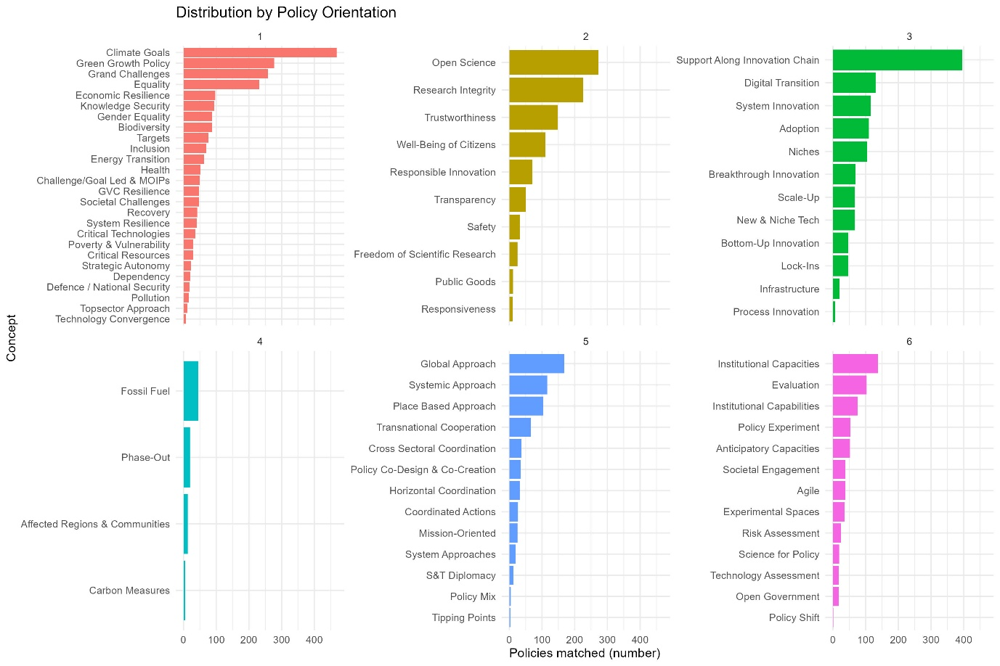
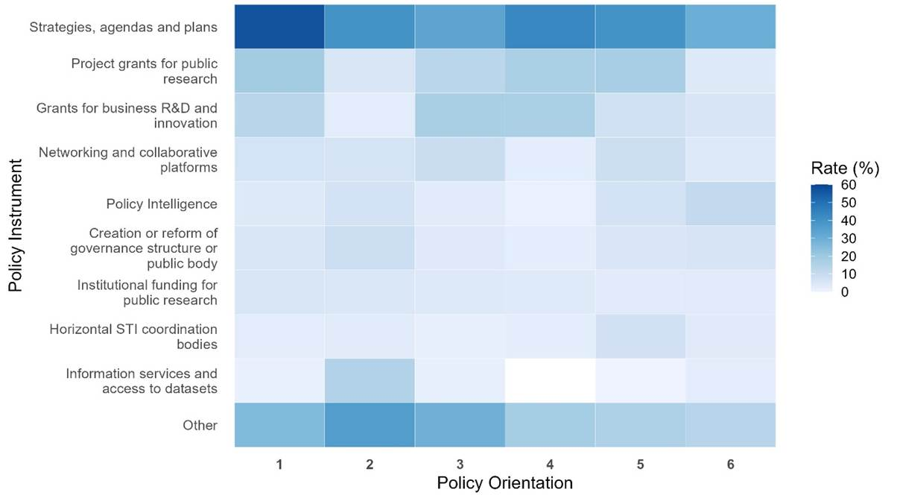
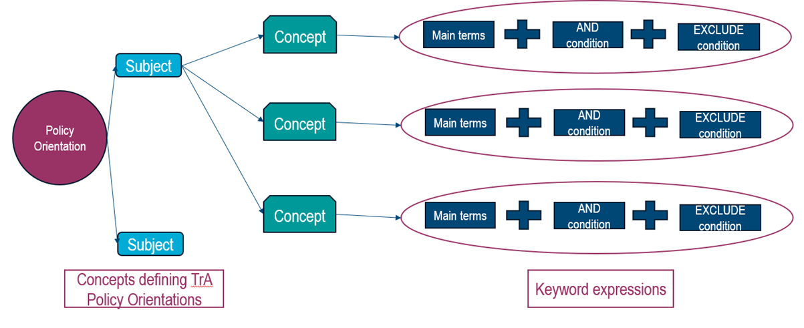

Background note:
This data story analyses the alignment of science, technology and innovation (STI) policies available in the STIP Compass database — an online platform that provides qualitative information on national STI policies across more than 60 countries, jointly maintained by the EC and the OECD — with the six policy orientations (POs) of the OECD Agenda for Transformative STI Policies (the Transformative Agenda). To support the analysis, a taxonomy of key concepts associated with the Transformative Agenda’s POs was developed and implemented using R (See the Methodological Annex).
The Transformative Agenda provides a framework to examine how STI policy needs to evolve to address complex, global-scale challenges. Its six POs are meant to help steer STI policy towards transformative change. They emphasise the need for STI policy to be: more directed toward addressing grand challenges (PO1); driven by broad-based values (PO2); attentive to scaling up and diffusing innovation (PO3); active in promoting phase-out of outdated technologies and practices (PO4); systemic and co-ordinated across multiple policy domains and levels of government (PO5), and experimental and agile (PO6). Implementation of the Transformative Agenda framework is also supported through a series of guidance that identifies high-level policy actions to support the reform of different STI policy areas to contribute to broad-based economic competitiveness, societal and economic resilience and security, and sustainability transitions.
Additional information on the POs and the process used to build and implement the taxonomy of key concepts is provided in the Methodological Annex.
Introduction
Governments are increasingly called upon to direct science, technology and innovation (STI) policy toward addressing complex challenges, including broad-based economic competitiveness, sustainability transitions and societal and economic resilience and security , which call for transformative change in economies and societies. The OECD Agenda for Transformative STI Policies provides a framework for STI policy to better tackle challenges like these, identifying six policy orientations (POs) to guide how policies need to evolve to promote transformative change.
An important starting point is to consider the extent to which existing STI policies are already aligned with these six POs, and the portfolio of policy instruments governments are using to support transformative change. This data story applies a taxonomy of transformative STI policy concepts to policy initiatives recorded in the EC-OECD STIP Compass. The analysis provides insights into how governments are operationalising the six policy orientations of the OECD Agenda for Transformative STI Policies. The taxonomy and methodology also offer tools to systematically identify real-world examples across a large corpus of STI policies.
While the examples highlighted in this data story are illustrative of the methodology, they also point to the potential for this approach to support longer-term efforts to convene countries around shared policy experiences and challenges. This might include, for example, bringing together policymakers working on international STI linkages and technology sovereignty, or on mission-oriented approaches to climate and sustainability, to exchange experiences and draw lessons from transformative STI policy in practice.
Key findings
- Some STI instruments reflect a systemic approach: Some implementation-level STI policy instruments span multiple policy orientations, reflecting a more integrated approach to addressing complex, interconnected social challenges.
- Strategies, agendas and plans dominate the policy instrument landscape: Relative to other policy instruments like direct funding and other indirect supports, strategies are most commonly associated with transformative STI policy.
- The mix of different policy instruments commonly used differs for each policy orientation: The way governments pursue each policy orientation is not only a question of how much attention they devote to it, but also of what tools they use. The analysis shows that different policy orientations are associated with distinct instrument mixes, reflecting the varied nature of the challenges they seek to address.
Mapping STI policies against the six policy orientations
The mapping exercise reveals considerable variation in the extent to which different policy orientations are reflected in existing STI portfolios. Overall, STI policy interventions are more commonly directed toward addressing economic and societal challenges (PO1), while initiatives focused on promoting the phase-out of outdated or harmful practices and innovations (PO4), or on systemic, multi-level co-ordination (PO5) appear to be less prevalent. This relative scarcity partly reflects conceptual and methodological limitations: many policy initiatives consider these effects more as useful spillovers than stated policy objectives; furthermore, policies targeting these policy orientations may be led by non-STI policy areas that fall outside the scope of STIP Compass. Further methodological considerations are discussed below in the Methodological Annex.
Differences are also visible within policy orientations. Each PO encompasses a range of distinct themes and dimensions, but policy instruments do not engage with them equally. Some concepts appear frequently in policy descriptions, while others are rarely mentioned. Taking PO1 as an example, sustainability-related concepts are more frequently reflected in existing policies than concepts linked to resilience and security or to broad-based economic outcomes. Figure 1 shows the distribution of concepts identified across the six POs.
Figure 1. Distribution of STI Policies by Policy Orientation and Concept.

Source: OECD analysis based on the EC-OECD STIP Compass
A systemic approach: Some STI policies are aligned with multiple policy orientations
Addressing complex societal challenges requires navigating interdependencies across multiple dimensions of the innovation system, from setting directionality and fostering experimentation, to phasing out harmful practices and ensuring coherent multi-level coordination. While individual STI policies need not explicitly target all these dimensions simultaneously, some initiatives naturally span several policy orientations because of their broader scope and ambition. A number of policy examples illustrate how a more integrated approach to design can address interconnected systemic challenges (Table 1).
Table 1. Examples of STI polices aligned with multiple policy orientations.
|
Name |
Country |
Description |
Alignment with Policy Orientations (POs) |
|
|
Netherlands |
Launched in 2016, this initiative aims to reduce harmful emissions and noise pollution from urban freight transport to zero by 2025. It promotes collaboration between governments, companies, and academic and research institutions through data sharing, the transition to zero-emission vehicles, and joint efforts to improve urban living environments. |
|
||
|
Thailand |
This flagship climate innovation programme was launched in 2023 to demonstrate practical pathways toward carbon neutrality and net-zero greenhouse gas emissions in line with Thailand’s national climate commitments. The initiative operates through two complementary sandbox projects, each serving as a real-world testing ground for low-carbon transition approaches. |
|
||
|
Portugal |
Established in 2022, the platform brings together national and regional, public and private entities responsible for sectoral and R&I policies to coordinate and implement the Green Deal Missions at national and regional level. |
|
||
Source: OECD analysis based on the EC-OECD STIP Compass
Strategies, agendas and plan dominate the policy instrument landscape
Strategies, agendas and plans dominate the landscape as the primary instrument for each PO (see Figure 2). They are essential for articulating STI investment priorities for STI and identifying key areas for reform. Analysis of STIP Compass data reveals that policy strategies represent almost 30% of the initiatives associated with the Transformative Agenda. This higher prevalence may reflect methodological and substantive dynamics. In terms of the former, strategies typically employ the kinds of broad conceptual and aspirational language that are more readily captured by keyword scanning. Regarding the latter, transformative STI policy may still be at a relatively early stage of maturity, with high-level frameworks and commitments preceding the development of concrete implementation instruments, such as funding programmes or regulatory measures.
In many cases, strategy policies also address multiple policy orientations, showcasing a systemic perspective on setting priorities. Examples covering at least 5 POs include Portugal’s National Strategy for Artificial Intelligence, Poland’s The Scientific Policy of the State, Malaysia’s National Water Resources Policy and Canada’s Pan-Canadian Framework on Clean Growth and Climate Change. However, the distribution of policy strategies varies across policy orientations. For example, while strategies account for more than half of STI policies aligned with PO1, they account for less than 35% of the policy instruments aligned with PO3 and PO6.
Figure 2. Proportion of policy instruments used in each of the policy orientations

Source: OECD analysis based on the EC-OECD STIP Compass
The policy mix differs according to each policy orientation
- Strategies, agendas and plans are the most commonly used instruments to support directionality (PO1), accounting for 56% of initiatives associated with this policy orientation. However, project grants for public research are also used relatively more often under PO1 than across the policy mix as a whole: they account for 18% of PO1-related initiatives, compared with an average of 12% across initiatives linked to any of the six policy orientations. This suggests that, while directionality is primarily supported through strategic instruments, targeted public research funding also plays a comparatively important role. Funding is often targeted toward addressing key topics through challenge-led and mission-oriented approaches (e.g., Netherland’s Mission Oriented Knowledge and Innovation Agenda for Climate and Energy) and grand challenges (e.g., UK’s International Science Partnerships Fund). These types of grants are also generally allocated to higher education or public research institutes to support their research efforts.
- To support values-based STI and STI policy (PO2), governments often use information services and access to data sets, including online platforms providing access to scientific resources. This instrument is used in 15% of STI policies aligned with PO2, compared to a general average of just 4% across all POs. Predictably, the common use of this instrument is related to the fact that PO2 includes the design and implementation of Open Science policies. However, it is also used in STI policies that seek to promote transparency (e.g., Canada’s Open Government Portal) and trustworthiness (Germany’s Data Space Mobility). Regulatory oversight and ethical advice bodies are also relevant policy instruments for PO2 (accounting for around 10% of policies within PO2, compared to approximately 3% across all POs). These are public authorities or boards that contribute to the implementation of regulations, soft law or ethical frameworks for technology development. In relation to PO2, these types of interventions tend to be used for research integrity purposes (e.g., Colombia’s Policy on Research Ethics, Bioethics and Scientific Integrity) and responsible innovation (e.g., Portugal’s Scientific Integrity and Research Ethics Office of FCT).
- With respect to supporting the emergence and diffusion of innovation (PO3), grants for business R&D are more common relative to other policy orientations (17% of initiatives associated with PO3 compared to a general average of 11% across the six POs). These are STI policies that offer funding to support innovation activities. They are often used to encourage experimentation with disruptive technologies (e.g., Ireland’s Exploring Innovation), the emergence and acceleration of innovation (e.g., Austria’s Innovation, Competitiveness and Internationalisation), bottom-up innovation (e.g., Germany’s Open Social Initiative), system innovation (e.g., Spain’s Grants to promote the Circular Economy), and digital transition (e.g., Canada’s Digital Adoption Program).
- Analysis of STIP Compass indicates that PO4, which involves the active phase-out of harmful or outdated technologies or practices, has the lowest coverage among STI policies captured by the database. As noted in the Methodological Annex, this may be, in part, due to the tendency for phase-out policies to operate downstream of research and innovation in terms of their focus on regulatory and market change. As a result, they may not be categorised as STI policies, leading to an underrepresentation in STIP Compass. However, there are several instrument types, besides strategies, that more commonly align with key concepts related to PO4. Grants for business R&D (17% of all initiatives associated with PO4) are implemented to support carbon measures (e.g., Costa Rica’s Voluntary Domestic Carbon Market) and phase-out (Türkiye’s SME Energy Efficiency Support Program). In addition, grants for public research (17% of all initiatives associated with PO4) are also relevant for phase-out efforts (e.g., United States Funding for Low Greenhouse Gas (GHG) Vehicle Technologies Research, Development, Demonstration and Deployment) and for engaging affected communities (e.g., Germany’s Strengthening Resilience and Structural Development in African Cities and Conurbations).
- Horizontal STI coordination bodies are commonly implemented to support systemic, multi-level co-ordination (PO5) (7% of the policies aligned with PO5 fall into this category, compared to an average of 3% across the six POs). These are public bodes aiming to coordinate STI policymaking across different levels of government (e.g., research and innovation councils or committees). This policy tool is often used to achieve specific types of co-ordination, including policy co-design and co-creation (e.g., Canada’s Indigenous STEM Cluster) and horizontal coordination between ministries (e.g., Japan’s Cross-Ministerial Strategic Innovation Promotion Program). It can also extend to the international sphere, covering, for example, science diplomacy (e.g., Poland’s Principles and Basics of Science Diplomacy) and transnational cooperation (e.g., Norway’s Nordic Organisations for Research and Innovation).
- To support agility and policy experimentation (PO6), policymakers tend to rely on policy intelligence tools (11% of initiatives aligned with PO6, compared to an average of 5% across the six POs). Policy intelligence tools aim to improve policy design and implementation, and can include evaluations, benchmarks and forecasts. They cover evaluation and evidence-based initiatives (e.g., Chile’s Learning Cycle for Program Evaluation), technology assessment (e.g., Argentina’s National Program for Technological Surveillance and Competitive Intelligence), anticipatory practices (e.g., Finland’s National Foresight Activities) and ‘science for policy’ initiatives (e.g., European Union’s Scientific Advice Mechanism). It should be noted that PO6 presents a particular challenge for keyword-based identification, as it relates to the process of designing and implementing policies rather than their substantive context, an aspect that is typically absent from STIP Compass. This means that the prevalence of PO6-aligned initiatives is likely to be underestimated.
See Annex: Policy instruments examples by policy orientation for a detailed description of each policy initiative mentioned.
Looking forward
The taxonomy of key concepts provides a helpful tool by supporting the identification, analysis and comparison of policies that align with different elements of transformative STI policy. As an open access tool, it can be replicated and enhanced, as well as augmented by other computational techniques.
Methodological Annex
The OECD’s Agenda for Transformative Science, Technology and Innovation PoliciesScience, technology and innovation (STI) are increasingly expected to address multifaceted societal, economic and environmental challenges and seize emerging opportunities. However, achieving these aims may require a substantial evolution in how STI systems operate and are governed, and their connections to other sectors, policy domains, and countries.
The OECD Agenda for Transformative Science, Technology and Innovation Policies (Transformative Agenda) provides a framework to examine how STI policy may need to evolve. The Agenda is comprised of three main components:
- Transformative goals for STI to pursue: (i) Advancing sustainability transitions; (ii) Promoting economic competitiveness that is fair and inclusive; and (iii) Fostering resilience and security.
- Policy orientations to help steer STI policy towards transformative change by being: more directed toward addressing grand challenges (PO1); driven by broad-based values (PO2); attentive to scaling up and diffusing innovation (PO3); active in promoting phase-out of outdated technologies and practices (PO4); systemic and co-ordinated across multiple levels of government (PO5), and experimental and agile (PO6). .
- STI policy areas where change may be most urgently needed. Ten STI policy areas including STI resources and STI relations that make up national STI systems and constitute a broad STI policy mix.
To identify policies specifically aligned with the Transformative Agenda calls for a fine-grained analysis to explore specific dimensions and concepts that form its backbone. To this end, a new taxonomy was developed to help identify and analyse transformative STI policies within the STIP Compass database.
How was the taxonomy constructed?Different approaches exist for identifying policy topics within qualitative data, ranging from Topic Modelling to leveraging the capabilities of Large Language Models (LLMs). While these approaches are efficient for exploration, the analysis required a higher degree of precision and interpretability. The aim was to map policies against nuanced concepts defined by the Transformative Agenda. The approach therefore was to build a tailored taxonomy of related keywords.
The taxonomy developed is structured hierarchically, with the Transformative Agenda’s six policy orientations broken down into distinct subjects, which are further defined by a set of concepts. To operationalise this, a corpus of keyword expressions was created for each concept (See Figure 3). These expressions consist of:
- A Main Term: The primary word or phrase directly related to the concept.
- An "AND" Condition: Supplementary terms required in certain contexts to ensure relevance.
- An "EXCLUDE" Condition: Terms that must be absent to prevent false positives (crucial for words with multiple meanings).
Figure 3. Taxonomy workflow and its components.

How was the taxonomy applied to scan STIP Compass policy data?The mechanism was straightforward yet robust: if a keyword expression appeared in a policy's textual data (description, goals, or background), the policy was considered aligned with the corresponding policy orientation. The core assumption is that this taxonomy could serve as a semantic bridge between high-level concepts and policy language. However, this process has required the navigation of several caveats. For example, keywords could not be too specific (risking the exclusion of relevant policies) nor too broad (capturing irrelevant ones).
The taxonomy also had to account for terms with multiple meanings (e.g., ‘equity’ is relevant to both finance and equality) and linguistic variations (e.g., different endings in a same family of words). The taxonomy underwent several rounds of iteration, including: concept definition, literature reviews to select terms and synonyms, and keywords extraction from actual policy texts. By continuously comparing the keyword lists against the query outcomes, the logic was redefined until arriving at the preliminary version, available here.
To put this framework into action, the taxonomy was implemented using R. The various qualitative text fields for each policy (descriptions, goals, and background) were consolidated into a unified searchable text. Then, the script scanned this consolidated text against the taxonomy. Whenever a keyword expression was recognized, the policy was automatically tagged with the corresponding concept (creating a binary indicator). For transparency and reproducibility, the full R code is available here.
At the same time, this process encountered some challenges. As the strategy to identify policies aligned with the Transformative Agenda relied only on the qualitative textual data describing the initiatives, there are policy orientations where alignment is more difficult to ensure. For example, PO6 covers novel issues associated to the process of designing and implementing policies, but STIP Compass textual data typically excludes descriptions of the policy process. In addition, PO6 is related to some concepts that can be either too general (e.g., Institutional capacities) or difficult to capture with available information (e.g., Policy shifts). These challenges must be taken into consideration when analysing policy alignment with the Transformative Agenda, and they should also draw attention to the need to continue improving the taxonomy.
Three methodological reflections from experimentation:Developing and implementing the taxonomy offered valuable insights into how complex policy landscapes can be better analysed by:
- Identifying potential trends
in transformative STI policy: When used in
combination with the existing STIP Compass taxonomy, this new layer of analysis
enables a deeper exploration of the relationship between policy design and
transformative STI policy. It can be used to address cross-cutting questions, including:
- Which policy instruments are used to accelerate innovation diffusion (PO3)?
- What are the main themes of policies that embed shared values into STI (PO2)?
- Which countries have reported initiatives that demonstrate the design and implementation of systemic and co-ordinated STI policy (PO5)?
- Augmenting computational techniques: The taxonomy provides a structured foundation that can complement advanced Natural Language Processing (NLP) techniques. Preliminary experiments indicate that while zero-shot Large Language Model (LLM) (i.e., a language model that categorises inputs using its own context and language understanding) classifications had poor outcomes, performance improved significantly when the taxonomy was used to contextualise the prompts. This highlights the potential synergies of mixed analysis, relying on both curated taxonomies and advanced computational methods. Future use cases could include measuring similarity between Transformative Agenda concepts and targeted STI policies (using embeddings) and the use of the taxonomy to train predictive models on new policy information.
- Facilitating open access: The taxonomy is shared openly to allow for review, replication, and modification by other analysts and researchers. The community is invited to access the keywords and code, whether to enhance the existing concepts, create their own versions or to apply the framework to different text sources.
Annex: Policy instrument examples by policy orientation
Table 2. Examples of Grants for public research aligned with Policy Orientation 1.
|
Instrument |
Country |
Name |
Description |
Key Concept |
|
Grants for public research |
Netherlands |
Mission Oriented Knowledge and Innovation Agenda for Climate and Energy (IKIA) |
IKIA is a strategic initiative designed to accelerate the energy transition and achieve sectoral CO2-reduction targets. Comprising 13 multi-year mission-driven innovation programmes, the agenda translates national climate challenges into specific development goals. Its primary objective is to provide the construction, installation, and energy sectors with the long-term perspective necessary to invest in innovation. |
Challenge-led and mission-oriented |
|
Grants for public research |
United Kingdom |
Launched in 2023 ISPF places science and technology at the heart of the UK’s international relationships. The initiative supports UK researchers and innovators in collaborating with global partners on multidisciplinary projects that no single nation could achieve alone. The fund is structured around four key themes: Resilient Planet, Transformative Technologies, Healthy People, Animals and Plants, and Tomorrow’s Talent. |
Grand challenges |
Source: OECD analysis based on the EC-OECD STIP Compass
Table 3. Examples of STI policies aligned with Policy Orientation 2.
|
Instrument |
Country |
Name |
Description |
Concept covered |
|
Information services and access to data sets |
Canada |
Launched in 2013, the Open Government Portal serves as a centralised platform for accessing Canadian government data and information. The initiative underpins Canada’s commitment to transparency, accountability, and citizen participation by providing a 'one-stop' access point for searchable open data, public consultation resources, and dialogue tools. The portal hosts over 60,000 geospatial datasets and nearly 6,000 science and technology resources. |
Transparency |
|
|
Information services and access to data sets |
Germany |
Initiated in 2020, the Data Space Mobility Germany aims to create a comprehensive data ecosystem for the transport sector. The initiative engages stakeholders through expert groups and conferences to establish a shared data space. The programme’s primary objective is to provide access to real and synthetic training and test data essential for the development, validation, and certification of reliable AI algorithms. |
Trustworthiness |
|
|
Regulatory oversight and ethical advice bodies |
Colombia |
Policy on Research Ethics, Bioethics and Scientific Integrity |
The policy, implemented between 2018 and 2023, sought to instil a culture of ethics and integrity across the national STI system, ensuring research quality and social relevance. It aimed to align the functions of strategic actors with established ethical principles. Its objectives included issuing guidelines for good scientific practice, integrating these standards into the National System of Competitiveness, and developing monitoring tools to evaluate implementation. |
Research integrity |
|
Regulatory oversight and ethical advice bodies |
Portugal |
The Scientific Integrity and Research Ethics Office is a body dedicated to maintaining high ethical standards in public research. The Office’s primary remit is to ensure scientific integrity and ethical compliance across all research funded by the FCT. Its responsibilities include creating frameworks for monitoring integrity, conducting ethical reviews of research projects, and promoting accountability. |
Responsible innovation |
Source: OECD analysis based on the EC-OECD STIP Compass
Table 4. Examples of Grants for business R&D aligned with Policy Orientation 3.
|
Instrument |
Country |
Name |
Description |
Concept covered |
|
Grants for business R&D |
Ireland |
The grant funds key preparatory activities, including reviewing the current status of scientific knowledge, developing prototypes to evaluate options, and analysing commercial feasibility regarding resources, risks, and return on investment. It also facilitates engagement with the third-level education sector to identify research partners and existing intellectual property, utilising resources such as Knowledge Transfer Ireland. |
Experimentation with emerging technologies |
|
|
Grants for business R&D |
Austria |
Launched in 2022, the programme funds innovation activities to mobilise first-time innovators and stabilise frontrunner firms, particularly in green technology. It also aims to enhance public procurement for innovative goods, foster social innovation, and facilitate transnational cooperation via EUREKA. It targets key sectors such as automotive, microelectronics, and life sciences, while remaining open to all technologies to support sustainable industrial transition. |
Emergence and acceleration of innovation |
|
|
Grants for business R&D |
Germany |
Open Social Initiative (OSI) |
Launched in 2023, OSI utilises broad participatory processes to address pressing societal challenges. The programme targets the improvement of educational transitions for disadvantaged groups. OSI offers grants of under €100,000 for non-technological innovation projects lasting up to two years. A distinct feature of the initiative is its accompaniment by a scientific project, the IMV-Lab, which is tasked with developing a blueprint for measuring the impact of social innovations, thereby strengthening the evidence base for future policy. |
Bottom-up innovation |
|
Grants for business R&D |
Spain |
Launched in 2022, the initiative aims to enhance the sustainability, circularity, and competitiveness of industrial and business processes. The grants support applied research, experimental development, and non-technological innovation. The scheme is structured around two main lines of action: one targeting key sectors — specifically textiles, plastics, and renewable energy capital goods — and another supporting transversal circular economy actions across companies of all sizes. |
System innovation |
|
|
Grants for business R&D |
Canada |
Announced in 2021, the initiative is designed to accelerate the digital transformation of small and medium-sized enterprises. The Grow Your Business Online stream provides micro-grants to customer-facing businesses to adopt e-commerce solutions. Meanwhile, the Boost Your Business Technology stream offers grants to larger SMEs for developing digital adoption strategies, alongside access to interest-free loans from the Business Development Bank of Canada. Furthermore, the scheme creates training and work opportunities for young people to assist firms in these technological transitions. |
Digital transition |
Source: OECD analysis based on the EC-OECD STIP Compass
Table 5. Examples of Grants for business R&D and public research aligned with Policy Orientation 4.
|
Instrument |
Country |
Name |
Description |
Concept covered |
|
Grants for business R&D |
Costa Rica |
Initiated in 2007, the initiative establishes a domestic framework to coordinate mitigation actions and emission reduction efforts across various economic sectors. By aligning these efforts with a macro vision of sustainable development, the scheme supports the national commitment originally set for 2021. The initiative specifically benefits small and medium-sized enterprises, providing support for experimental development and non-technological innovation. The policy encourages voluntary participation in the country's environmental transition. |
Carbon measures |
|
|
Grants for business R&D |
Türkiye |
Launched in 2022, the program addresses the specific resource constraints faced by Turkish small and medium-sized enterprises regarding energy sustainability. The initiative encourages SMEs to adopt energy-efficient practices and technologies. The programme provides grants of less than EUR 100,000 to implement projects that lower energy consumption and operational costs. |
Phase-out |
|
|
Grants for public research |
Germany |
Strengthening Resilience and Structural Development in African Cities and Conurbations (AfResi) |
Initiated in 2019, AfResi aims to reduce vulnerability to extreme climate, economic, and social events. The initiative supports transnational projects jointly led by African and German experts from science, industry, and civil society. The programme targets the development of innovative, application-oriented solutions to increase the resilience of populations and systems in precarious situations by 2030. Grants of up to EUR 1 million fund multidisciplinary basic and applied research across diverse sectors, including resource management, energy supply, and governance. |
Affected communities |
|
Grants for public research |
United States |
This initiative allocated USD 62.7 million to research, development, demonstration, and deployment activities for low-carbon vehicle technologies. Structured around eight distinct topic areas, the programme supports projects ranging from the expansion of electric vehicle charging infrastructure in communities and workplaces to the reduction of DC fast-charging equipment costs. Additionally, it funds research into off-road and construction vehicle electrification, as well as enabling technologies for natural gas, propane, and dimethyl ether engines. |
Phase-out |
Source: OECD analysis based on the EC-OECD STIP Compass
Table 6. Examples of Horizontal STI coordination bodies aligned with Policy Orientation 5.
|
Instrument |
Country |
Name |
Description |
Concept covered |
|
Horizontal STI coordination bodies |
Poland |
Initiated in 2022, this framework establishes the core principles of science diplomacy in Poland. The initiative aims to strengthen the international impact and visibility of Polish research and higher education. Key activities include coordinating with diplomatic missions to promote the country as a desirable destination for scientific development through campaigns such as Research in Poland. The strategy focuses on increasing the competitiveness of Polish institutions, balancing researcher mobility, and attracting international talent via targeted scholarship programmes. |
Science diplomacy |
|
|
Horizontal STI coordination bodies |
Norway |
This initiative aims to facilitate intergovernmental co-operation in research, education, and innovation across the Nordic region. With roots dating back to 1973, the initiative now encompasses key independent institutions such as NordForsk, Nordic Energy Research, and Nordic Innovation. These bodies work collectively to establish the Nordic countries as global leaders in sustainable growth and scientific excellence. By pooling resources and coordinating efforts, the initiative seeks to enhance the quality, impact, and cost-efficiency of cross-border collaboration and infrastructure. |
Transnational cooperation |
|
|
Horizontal STI coordination bodies |
Canada |
Indigenous STEM Cluster (I -STEM) |
Started in 2019, I-STEM is an interdepartmental collaboration aiming to advance Indigenous inclusion and representation within federal science-based departments and the broader STEM landscape. By informing and enhancing federal policies, programmes, and recruitment practices, I-STEM seeks to strengthen relationships between the federal government and Indigenous Peoples, enhance cultural competency within the public service, and nurture Indigenous talent. The cluster was established with a mandate to eliminate systemic barriers and close socio-economic gaps through co-developed solutions that respect Indigenous knowledge systems. |
Policy co-design & co-creation |
|
Horizontal STI coordination bodies |
Japan |
Cross-Ministerial Strategic Innovation Promotion Program (SIP) |
Initiated in 2018, SIP aims to solve societal challenges and drive economic growth by bridging the gap between basic research and commercialisation. The programme functions as a horizontal coordination body, uniting various ministries with academic and government representatives. By fostering comprehensive cooperation across industry, academia, and government, SIP supports universities and private laboratories in developing practical technology solutions that transcend traditional administrative boundaries. |
Horizontal coordination |
Source: OECD analysis based on the EC-OECD STIP Compass
Table 7. Examples of Policy intelligence tools aligned with Policy Orientation 6.
|
Instrument |
Country |
Name |
Description |
Concept covered |
|
Policy Intelligence tools |
Chile |
Launched in 2018, the initiative seeks to install robust evaluation capacities within the National System of Science, Technology, Knowledge and Innovation by standardising the design, monitoring, and assessment of public instruments. Using the Theory of Change as its core methodology, the cycle operates through three stages to ensure that policy interventions are well-defined, effective, and institutionally coherent. It supports the Studies and Evaluations Unit in generating high-quality policy intelligence, providing tools such as design forms and indicator monitoring to guide public administration. |
Evaluation and evidence-based policies |
|
|
Policy Intelligence tools |
Argentina |
National Program for Technological Surveillance and Competitive Intelligence (VINTEC) |
Launched in 2010, VINTEC is a strategic initiative designed to minimise decision-making uncertainty. The programme focuses on identifying and analysing global trends, emerging technologies, and market opportunities. It actively promotes the adoption of surveillance and competitive intelligence practices among diverse stakeholders, including SMEs, large corporations, and public research organisations. By processing data on competitors and commercial environments, VINTEC supports the formulation of robust scientific and business strategies. |
Technology assessment |
|
Policy Intelligence tools |
Finland |
The initiative, established in 2012, comprises the Government Foresight Group, which steers strategic foresight work, and the National Foresight Network, a broad forum connecting government, academia, and civil society. The primary objective is to anticipate societal challenges and ensure that policy formulation is grounded in robust foresight data. By harmonising the efforts of various foresight actors, the initiative directly influences the selection of thematic focus areas for government analysis and strategic research councils. |
Anticipatory capacities |
|
|
Policy Intelligence tools |
European Union |
Established in 2015, the initiative supports the College of Commissioners with high-quality, timely, and independent scientific advice. The initiative is designed to improve the quality of EU legislation in line with the Better Regulation agenda. At the core of this mechanism is the High Level Group of Scientific Advisors, a body composed of seven specialised and independent experts appointed in their personal capacity. These advisors are selected by the Commissioner for Research, Innovation and Science based on recommendations from an independent Identification Committee. |
Science for policy |
Source: OECD analysis based on the EC-OECD STIP Compass